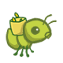
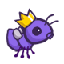
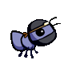

Project 3: Ants Vs. SomeBees

The bees are coming!
Create a better soldier
With inherit-ants.
Introduction
For full credit:
- Submit with Phase 1 and Phase 2 complete by Monday, July 22 (worth 1 pt).
- Submit with all phases and Extra Credit complete by Thursday, July 25.
Solve the problems in order, since some later problems depend on earlier problems.
The entire project can be completed with a partner.
You can get 1 bonus point by submitting the entire project by Wednesday, July 24.
In this project, you will create a tower defense game called Ants Vs. SomeBees. As the ant queen, you populate your colony with the bravest ants you can muster. Your ants must protect their queen from the evil bees that invade your territory. Irritate the bees enough by throwing leaves at them, and they will be vanquished. Fail to pester the airborne intruders adequately, and your queen will succumb to the bees' wrath. This game is inspired by PopCap Games' Plants Vs. Zombies.
This project uses an object-oriented programming paradigm, focusing on material from Chapter 2.5 of Composing Programs. The project also involves understanding, extending, and testing a large program.
Download starter files
The ants.zip archive contains several files, but all of your
changes will be made to ants.py.
ants.py: The game logic of Ants Vs. SomeBeesants_plans.py: The details of each difficulty levelucb.py: Utility functions for CS 61Agui.py:A graphical user interface (GUI) for Ants Vs. SomeBees.ok: The autograderproj3.ok: Theokconfiguration filetests: A directory of tests used byoklibs: A directory of libraries used bygui.pystatic: A directory of images and files used bygui.pytemplates: A directory of HTML templates used bygui.py
Logistics
The project is worth 24 points. 23 points are for correctness, 1 point is for submitting Phase 1 and Phase 2 by the first checkpoint date.
You can get 1 EC point for submitting the entire project by Wednesday, July 24. You can get up to 4 additional EC points by completing the optional EC questions.
You will turn in the following files:
ants.py
You do not need to modify or turn in any other files to complete the project. To submit the project, submit the required files to the appropriate Gradescope assignment.
For the functions that we ask you to complete, there may be some initial code that we provide. If you would rather not use that code, feel free to delete it and start from scratch. You may also add new function definitions as you see fit.
However, please do not modify any other functions or edit any files not listed above. Doing so may result in your code failing our autograder tests. Also, please do not change any function signatures (names, argument order, or number of arguments).
Throughout this project, you should be testing the correctness of your code. It is good practice to test often, so that it is easy to isolate any problems. However, you should not be testing too often, to allow yourself time to think through problems.
We have provided an autograder called ok to help you
with testing your code and tracking your progress. The first time you run the
autograder, you will be asked to log in with your Ok account using your web
browser. Please do so. Each time you run ok, it will back up
your work and progress on our servers.
The primary purpose of ok is to test your implementations.
If you want to test your code interactively, you can run
python3 ok -q [question number] -iwith the appropriate question number (e.g.
01) inserted.
This will run the tests for that question until the first one you failed,
then give you a chance to test the functions you wrote interactively.
You can also use the debugging print feature in OK by writing
print("DEBUG:", x)
which will produce an output in your terminal without causing OK tests to fail
with extra output.
The Game
A game of Ants Vs. SomeBees consists of a series of turns. In each turn, new
bees may enter the ant colony. Then, new ants are placed to defend their colony.
Finally, all insects (ants, then bees) take individual actions. Bees either try
to move toward the end of the tunnel or sting ants in their way. Ants perform a
different action depending on their type, such as collecting more food or
throwing leaves at the bees. The game ends either when a bee reaches the end of
the tunnel (ants lose), the bees destroy a QueenAnt if it exists (ants lose),
or the entire bee fleet has been vanquished (ants win).

Core concepts
The Colony. This is where the game takes place. The colony consists of
several Places that are chained together to form tunnels through which the
bees travel. The colony also has some quantity of food which can be expended in
order to place an ant in a tunnel.
Places. A place links to another place to form a tunnel. The player can put a single ant into each place. However, there can be many bees in a single place.
The Hive. This is the place where bees originate. Bees exit the beehive to enter the ant colony.
Ants. The player places an ant into the colony by selecting from the
available ant types at the top of the screen.
Each type of ant takes a different action and requires a different
amount of colony food to place. The two most basic ant types are the HarvesterAnt,
which adds one food to the colony during each turn, and the ThrowerAnt, which
throws a leaf at a bee each turn. You will be implementing many more!
Bees. Each turn, a bee either advances to the next place in the tunnel if no ant is in its way, or it stings the ant in its way. Bees win when at least one bee reaches the end of a tunnel. In addition to the orange bees, there are yellow wasps that do double damage and a green boss bee that is quite difficult to vanquish.
Core classes
The concepts described above each have a corresponding class that encapsulates the logic for that concept. Here is a summary of the main classes involved in this game:
GameState: Represents the colony and some state information about the game, including how much food is available, how much time has elapsed, where theAntHomeBaseis, and all thePlaces in the game.Place: Represents a single place that holds insects. At most oneAntcan be in a single place, but there can be manyBees in a single place.Placeobjects have anexitto the left and anentranceto the right, which are also places. Bees travel through a tunnel by moving to aPlace'sexit.Hive: Represents the place whereBees start out (on the right of the tunnel).AntHomeBase: Represents the placeAnts are defending (on the left of the tunnel). IfBees get here, they win :(Insect: A base class forAntandBee. Each insect has ahealthattribute representing its remaining health and aplaceattribute representing thePlacewhere it is currently located. Each turn, every activeInsectin the game performs itsaction.Ant: Represents ants. EachAntsubclass has special attributes or a specialactionthat distinguish it from otherAnttypes. For example, aHarvesterAntgets food for the colony and aThrowerAntattacksBees. Each ant type also has afood_costattribute that indicates how much it costs to deploy one unit of that type of ant.Bee: Represents bees. Each turn, a bee either moves to theexitof its currentPlaceif thePlaceis notblockedby an ant, or stings the ant occupying its samePlace.
Game Layout
Below is a visualization of a GameState.

To help visualize how all the classes fit together, here is a diagram of all of the classes and their inheritance relationships.
Getting Started Videos
These videos may provide some helpful direction for tackling the coding problems on the project.
To see these videos, you should be logged into your berkeley.edu email.
Phase 1: Basic gameplay
For full credit: submit with Phase 1 and Phase 2 complete by Monday, July 22 (worth 1 pt).
In the first phase you will complete the implementation that will allow for
basic gameplay with the two basic Ants: the HarvesterAnt and the
ThrowerAnt.
Problem 0 (0 pt)
Answer a set of conceptual questions after you have read the
entire ants.py file by running this ok command:
python3 ok -q 00 -uIf you get stuck while answering these questions, you can try reading through
ants.py again or asking questions on Ed.
A note on unlocking tests: If you'd like to review the unlocking questions after you have completed the unlocking test, you can navigate to (within the
antsfolder), thetestsfolder. For example, after unlocking Problem 0, you can review the unlocking test attests/00.py.
Problem 1 (1 pt)
Part A: Currently, there is no cost
for placing any type of Ant, and so there is no challenge to the
game. The base class Ant has a food_cost of
zero. Override this class attribute for HarvesterAnt and ThrowerAnt
according to the "Food Cost" column in the table below.
| Class | Food Cost | Initial Health |
 HarvesterAnt |
2 | 1 |
 ThrowerAnt |
3 | 1 |
Part B: Now that placing an Ant costs food, we need to be able to gather more food!
To fix this issue, implement the HarvesterAnt class. A HarvesterAnt is a
type of Ant that adds one food to the gamestate.food total as its action.
Before writing any code, unlock the tests to verify your understanding of the question:
python3 ok -q 01 -uOnce you are done unlocking, begin implementing your solution. You can check your correctness with:
python3 ok -q 01Problem 2 (1 pt)
In this problem, you'll complete Place.__init__ by adding code that tracks entrances. Right
now, a Place keeps track only of its exit. We would like a Place to keep
track of its entrance as well. A Place needs to track only one entrance.
Tracking entrances will be useful when an Ant needs to see what Bees are in
front of it in the tunnel.
However, simply passing an entrance to a Place constructor will be
problematic; we would need to have both the exit and the entrance before
creating a Place! (It's a chicken or the
egg
problem.) To get around this problem, we will keep track of entrances in the
following way instead. Place.__init__ should use this logic:
- A newly created
Placealways starts with itsentranceasNone. - If the
Placehas anexit, then theexit'sentranceis set to thatPlace.
Hint: Remember that when the
__init__method is called, the first parameter,self, is bound to the newly created object
Hint: Try drawing out two
Places next to each other if things get confusing. In the GUI, a place'sentranceis to its right while theexitis to its left.
Hint: Remember that
Places are not stored in a list, so you can't index into anything to access them. This means that you can't do something likecolony[index + 1]to access an adjacentPlace. How can you move from one place to another?
Before writing any code, unlock the tests to verify your understanding of the question:
python3 ok -q 02 -uOnce you are done unlocking, begin implementing your solution. You can check your correctness with:
python3 ok -q 02Problem 3 (2 pt)
In order for a ThrowerAnt to throw a leaf, it must know which bee to hit.
The provided implementation of the nearest_bee method in the ThrowerAnt
class only allows them to hit bees in the same Place. Your job is to fix it
so that a ThrowerAnt will throw_at the nearest bee in front of it that is not still in the Hive.
This includes bees that are in the same Place as a ThrowerAnt
Hint: All
Places have anis_hiveattribute which isTruewhen that place is theHive.
Change nearest_bee so that it returns a random Bee from the nearest place that
contains bees. Your implementation should follow this logic:
- Start from the current
Placeof theThrowerAnt. - For each place, return a random bee if there is any, and if not,
inspect the place in front of it (stored as the current place's
entrance). - If there is no bee to attack, return
None.
Hint: The
random_beefunction provided inants.pyreturns a random bee from a list of bees orNoneif the list is empty.
Hint: As a reminder, if there are no bees present at a
Place, then thebeesattribute of thatPlaceinstance will be an empty list.
Hint: Having trouble visualizing the test cases? Try drawing them out on paper! The sample diagram provided in Game Layout shows the first test case for this problem.
Before writing any code, unlock the tests to verify your understanding of the question:
python3 ok -q 03 -uOnce you are done unlocking, begin implementing your solution. You can check your correctness with:
python3 ok -q 03Playing the game
After implementing nearest_bee, a ThrowerAnt should be able to throw_at a
Bee in front of it that is not still in the Hive.
Now you're ready to try what you've built. To start a graphical game, run:
python3 gui.pyAfter you start the graphical version, the game is (usually) available at http://127.0.0.1:31415/.
The game has several options that you will use throughout the project,
which you can view with python3 gui.py --help.
usage: gui.py [-h] [-d DIFFICULTY] [-w] [--food FOOD]
Play Ants vs. SomeBees
optional arguments:
-h, --help show this help message and exit
-d DIFFICULTY sets difficulty of game (test/easy/normal/hard/extra-hard)
-w, --water loads a full layout with water
--food FOOD number of food to start with when testingYou can refresh the webpage to restart the game, but if you changed your code,
you need to terminate gui.py and run it again. To terminate gui.py, you can
hit Ctrl + C on the terminal.
You cannot have multiple tabs of this same Ants GUI open simultaneously or they will all error.
Phase 2: More Ants!
For full credit: submit with Phase 1 and Phase 2 complete by Monday, July 22 (worth 1 pt).
Now that you've implemented basic gameplay with two types of Ants, let's
add some flavor to the ways ants can attack bees. In this problem and on, you'll be
implementing several different Ants with different attack strategies.
After you implement each Ant subclass in these sections, you'll need to set its
implemented class attribute to True so that that type of ant will show up in the
GUI. Feel free to try out the game with each new ant to test the functionality!
With all following ants from now on, try python3 gui.py to play against a
full swarm of bees in a multi-tunnel layout and try -d hard or
-d extra-hard if you want a real challenge! If the bees are too numerous to
vanquish, you might need to create some new ants.
Problem 4 (2 pt)
A ThrowerAnt is a powerful threat to the bees, but it has a high food cost.
In this problem, you'll implement two subclasses of ThrowerAnt that are less
costly but have constraints on the distance they can throw:
- The
LongThrowercan onlythrow_ataBeethat is found after following at least 5entrancetransitions. It cannot hitBees that are in the samePlaceas it or the first 4Places in front of it. If there are twoBees, one too close to theLongThrowerand the other within its range, theLongThrowershould only throw at the fartherBee, which is within its range, instead of trying to hit the closerBee. - The
ShortThrowercan onlythrow_ataBeethat is found after following at most 3entrancetransitions. It cannot throw at any bees further than 3Places in front of it.
Neither of these specialized throwers can throw_at a Bee that is exactly 4
Places away.
| Class | Food Cost | Initial Health |
 ShortThrower |
2 | 1 |
 LongThrower |
2 | 1 |
To implement these new throwing ants, your ShortThrower and LongThrower classes
should inherit the nearest_bee method from the base ThrowerAnt class.
The logic of choosing which bee a thrower ant will attack is
the same, except the ShortThrower and LongThrower ants where their range is
limited by a lower and upper bound, respectively.
To do this, modify the nearest_bee method to reference lower_bound and upper_bound attributes,
and only return a bee if it is within range.
Make sure to give these lower_bound and upper_bound attributes appropriate
values in the ThrowerAnt class so that the behavior of ThrowerAnt is
unchanged. Then, implement the subclasses LongThrower and ShortThrower
with appropriately constrained ranges.
You should not need to repeat any code between ThrowerAnt,
ShortThrower, and LongThrower.
Hint:
float('inf')returns an infinite positive value represented as a float that can be compared with other numbers.
Hint:
lower_boundandupper_boundshould mark an inclusive range.
Important: Make sure your class attributes are called
upper_boundandlower_boundThe tests directly reference these attribute names, and will error if you use another name for these attributes.
Don't forget to set the implemented class attribute of LongThrower and
ShortThrower to True.
Before writing any code, unlock the tests to verify your understanding of the question:
python3 ok -q 04 -uAfter writing code, test your implementation (rerun the tests for 03 to make sure they still work):
python3 ok -q 03
python3 ok -q 04👩🏽💻👨🏿💻 Pair programming? Remember to alternate between driver and navigator roles. The driver controls the keyboard; the navigator watches, asks questions, and suggests ideas.
Problem 5 (3 pt)
Implement the FireAnt, which does damage when it receives damage. Specifically,
if it is damaged by amount health units, it does a damage of
amount to all bees in its place (this is called reflected damage).
If it dies, it does an additional amount of damage, as specified by its damage attribute,
which has a default value of 3 as defined in the FireAnt class.
To implement this, override Insect's reduce_health method.
Your overriden method should call the reduce_health method inherited from
the superclass (Ant) which inherits from it's superclass Insect to reduce the current FireAnt instance's health.
Calling the inherited reduce_health method on a FireAnt instance reduces
the insect's health by the given amount and removes the insect from its
place if its health reaches zero or lower.
Hint: Do not call
self.reduce_health, or you'll end up stuck in a recursive loop. (Can you see why?)
However, your method needs to also include the reflective damage logic:
- Determine the reflective damage amount:
start with the
amountinflicted on the ant, and then adddamageif the ant's health has dropped to or below 0. - For each bee in the place, damage them with the total amount by
calling the appropriate
reduce_healthmethod for each bee.
Important: Remember that when any
Antloses all its health, it is removed from itsplace, so pay careful attention to the order of your logic inreduce_health.
| Class | Food Cost | Initial Health |
 FireAnt |
5 | 3 |
Hint: Damaging a bee may cause it to be removed from its place. If you iterate over a list, but change the contents of that list at the same time, you may not visit all the elements. This can be prevented by making a copy of the list. You can either use a list slice, or use the built-in
listfunction to make sure we do not affect the original list.
>>> s = [1,2,3,4]
>>> s[:]
[1, 2, 3, 4]
>>> list(s)
[1, 2, 3, 4]
>>> (s[:] is not s) and (list(s) is not s)
TrueOnce you've finished implementing the FireAnt, give it a class attribute
implemented with the value True.
Note: Even though you are overriding the superclass's
reduce_healthfunction (Ant.reduce_health), you can still use this method in your implementation by calling it.
Before writing any code, unlock the tests to verify your understanding of the question:
python3 ok -q 05 -uOnce you are done unlocking, begin implementing your solution. You can check your correctness with:
python3 ok -q 05You can also test your program by playing a game or two! A FireAnt should
destroy all co-located Bees when it is stung. To start a game with ten food
(for easy testing):
python3 gui.py --food 10Problem 6 (1 pt)
We are going to add some protection to our glorious home base by implementing
the WallAnt, an ant that does nothing each turn. A WallAnt is
useful because it has a large health value.
| Class | Food Cost | Initial Health |
 WallAnt |
4 | 4 |
Unlike with previous ants, we have not provided you with a class statement.
Implement the WallAnt class from scratch. Give it a class attribute name
with the value 'Wall' (so that the graphics work) and a class attribute
implemented with the value True (so that you can use it in a game).
Hint: Make sure you implement the
__init__method too so theWallAntstarts off with the appropriate amount ofhealth!
Before writing any code, unlock the tests to verify your understanding of the question:
python3 ok -q 06 -uOnce you are done unlocking, begin implementing your solution. You can check your correctness with:
python3 ok -q 06Problem 7 (3 pt)
Implement the HungryAnt, which will select a random Bee from its place and
deal damage to the Bee equal to the Bee's health, eating it whole. After
eating a Bee, a HungryAnt must spend 3 turns chewing before being able to
eat again. While the HungryAnt is chewing, it is not able to eat (deal damage
to) any Bees. If there is no bee in its place available to eat, the
HungryAnt will do nothing.
We have not provided you with a class header.
Implement the HungryAnt class from scratch. Give it a class attribute name
with the value 'Hungry' (so that the graphics work) and a class attribute
implemented with the value True (so that you can use it in a game).
Hint: When a
Beeis eaten, its health should be reduced by its health.
| Class | Food Cost | Initial Health |
 HungryAnt |
4 | 1 |
Give HungryAnt a chewing_turns class attribute that stores the number of
turns that it will take a HungryAnt to chew (set to 3). Also, give each
HungryAnt an instance attribute turns_to_chew that counts the number of turns
it has left to chew, initialized to 0, since it hasn't eaten anything at the
beginning. You can also think of turns_to_chew as the number of turns until a
HungryAnt can eat another Bee.
Implement the action method of the HungryAnt: First, check if it is chewing; if
so, decrement its turns_to_chew. Otherwise, eat a random Bee in its
place by reducing the Bee's health to 0. Make sure to set the turns_to_chew
when a Bee is eaten!
Hint: Other than the
actionmethod, make sure you implement the__init__method too in order to define any instance variables and make sure thatHungryAntstarts off with the appropriate amount ofhealth!
Before writing any code, unlock the tests to verify your understanding of the question:
python3 ok -q 07 -uOnce you are done unlocking, begin implementing your solution. You can check your correctness with:
python3 ok -q 07👩🏽💻👨🏿💻 Pair programming? This would be a good time to switch roles. Switching roles makes sure that you both benefit from the learning experience of being in each role.
Problem 8 (3 pt)
Right now, our ants are quite frail. We'd like to provide a way to help them
last longer against the onslaught of the bees. Enter the BodyguardAnt.
| Class | Food Cost | Initial Health |
 BodyguardAnt |
4 | 2 |
To more easily implement the BodyguardAnt, we will break up this problem into 3 subparts.
In each part, we will making changes in either the ContainerAnt class, Ant
class, or BodyguardAnt class.
Note: We have separated out Question 8 into three different subparts. We recommend going through the unlocking test for each subpart before writing any code for it. You will be tested through each subpart and each subpart is worth one point (for a total of three for the whole question).
Problem 8a
First, we will define and work in a ContainerAnt parent class that we will later use for our BodyguardAnt.
A BodyguardAnt differs from a normal ant because it is a ContainerAnt; it can
contain another ant and protect it, all in one Place. When a Bee stings the
ant in a Place where one ant contains another, only the container is
damaged. The ant inside the container can still perform its original action.
If the container perishes, the contained ant still remains in the place (and
can then be damaged).
Each ContainerAnt has an instance attribute ant_contained that stores the ant it
contains. This ant, ant_contained, initially starts off as None to indicate that there is no ant being
stored yet. Implement the store_ant method so that it sets the ContainerAnt's
ant_contained instance attribute to the ant argument passed in. Then implement the
ContainerAnt's action method. This method will ensure that if our ContainerAnt currently contains an ant, ant_contained's action is performed.
In addition, to ensure that a container and its contained ant can both occupy a place at
the same time (a maximum of two ants per place), but only if exactly one is a
container, we can create an can_contain method.
There is already an Ant.can_contain method, but it always returns False.
Override the method can_contain in ContainerAnt so that it takes an ant other as an
argument and returns True if:
- This
ContainerAntdoes not already contain another ant. - The other ant is not a container.
Hint: You may find the
is_containerattribute that eachAnthas useful for checking if a specificAntis a container.
Before writing any code, unlock the tests to verify your understanding of the question:
python3 ok -q 08a -uOnce you are done unlocking, begin implementing your solution. You can check your correctness with:
python3 ok -q 08aProblem 8b
Next, we will be working in the Ant class.
Modify Ant.add_to to allow a container and its contained ant
to occupy the same place according to the following rules:
- If the ant originally occupying a place can contain the ant being added, then both ants occupy the place and original ant contains the ant being added.
- If the ant being added can contain the ant originally in the space, then both ants occupy the place and the (container) ant being added contains the original ant.
- If neither
Antcan contain the other, raise the sameAssertionErroras before (the one already present in the starter code). - Important: If there are two ants in a specific
Place, theantattribute of thePlaceinstance should refer to the container ant, and the container ant should contain the non-container ant.
Hint: You should also take advantage of the
can_containmethod you wrote and avoid repeating code.
Note: If you're getting an "unreachable code" warning for
Ant.add_tovia the VSCode Pylance extension, it's fine to ignore this specific warning, as the code is actually run (the warning in this case is inaccurate).
Before writing any code, unlock the tests to verify your understanding of the question:
python3 ok -q 08b -uOnce you are done unlocking, begin implementing your solution. You can check your correctness with:
python3 ok -q 08bProblem 8c
Finally, we can work on implementing our BodyguardAnt class.
Add a BodyguardAnt.__init__ that sets the initial amount of health for the Bodyguard ant.
We do not need to create an action method here since the BodyguardAnt class inherits it from the ContainerAnt class.
Also note that the BodyguardAnt does not do any damage.
Once you've finished implementing the BodyguardAnt,
give it a class attribute implemented with the value True.
Before writing any code, unlock the tests to verify your understanding of the question:
python3 ok -q 08c -uOnce you are done unlocking, begin implementing your solution. You can check your correctness with:
python3 ok -q 08cProblem 9 (2 pt)
The BodyguardAnt provides great defense, but they say the best defense is a
good offense. The TankAnt is a ContainerAnt that protects an ant in its place
and also deals 1 damage to all bees in its place each turn. Like any ContainerAnt, a TankAnt allows the ant
that it contains to perform its action each turn.
| Class | Food Cost | Initial Health |
 TankAnt |
6 | 2 |
We have not provided you with a class header.
Implement the TankAnt class from scratch. Give it a class attribute name
with the value 'Tank' (so that the graphics work) and a class attribute
implemented with the value True (so that you can use it in a game).
You should not need to modify any code outside of the TankAnt class. If you
find yourself needing to make changes elsewhere, look for a way to write your
code for the previous question such that it applies not just to BodyguardAnt
and TankAnt objects, but to container ants in general.
Hint: The only methods you need to override from
TankAnt's parent class are__init__andaction.
Hint: Like with
FireAnt, it is possible that damaging a bee will cause it to be removed from its place.
Before writing any code, unlock the tests to verify your understanding of the question:
python3 ok -q 09 -uOnce you are done unlocking, begin implementing your solution. You can check your correctness with:
python3 ok -q 09Checkpoint Submission
Check to make sure that you completed all the problems in Phase 1 and Phase 2:
python3 ok --scoreThen, submit ants.py to the Ants Checkpoint assignment on Gradescope before the checkpoint deadline.
When you run ok commands, you'll still see that some tests are locked
because you haven't completed the whole project yet. You'll get full credit for
the checkpoint if you complete all the problems up to this point.
Congratulations! You have finished Phase 1 and Phase 2 of this project!
Phase 3: Water and Might
In the final phase, you're going to add one last kick to the game by introducing a new type of place and new ants that are able to occupy this place. One of these ants is the most important ant of them all: the queen of the colony!
Problem 10 (1 pt)
Let's add water to the colony! Currently there are only two types of places, the
Hive and a basic Place. To make things more interesting, we're going to
create a new type of Place called Water.
Only an insect that is waterproof can be placed in Water. In order
to determine whether an Insect is waterproof, add a new class attribute to the
Insect class named is_waterproof that is set to False. Since bees can fly,
their is_waterproof attribute is True, overriding the inherited value.
Now, implement the add_insect method for Water. First, add the insect to
the place regardless of whether it is waterproof. Then, if the insect is not
waterproof, reduce the insect's health to 0. Do not repeat code from elsewhere
in the program. Instead, use methods that have already been defined.
Before writing any code, unlock the tests to verify your understanding of the question:
python3 ok -q 10 -uOnce you are done unlocking, begin implementing your solution. You can check your correctness with:
python3 ok -q 10Once you've finished this problem, play a game that includes water. To access
the wet_layout, which includes water, add the --water option (or -w for
short) when you start the game.
python3 gui.py --water👩🏽💻👨🏿💻 Pair programming? Remember to alternate between driver and navigator roles. The driver controls the keyboard; the navigator watches, asks questions, and suggests ideas.
Problem 11 (2 pt)
Currently there are no ants that can be placed on Water. Implement the
ScubaThrower, which is a subclass of ThrowerAnt that is more costly and
waterproof, but otherwise identical to its base class. A ScubaThrower should
not lose its health when placed in Water.
| Class | Food Cost | Initial Health |
 ScubaThrower |
6 | 1 |
We have not provided you with a class header. Implement the ScubaThrower
class from scratch. Give it a class attribute name with the value 'Scuba'
(so that the graphics work) and remember to set the class attribute
implemented with the value True (so that you can use it in a game).
Before writing any code, unlock the tests to verify your understanding of the question:
python3 ok -q 11 -uOnce you are done unlocking, begin implementing your solution. You can check your correctness with:
python3 ok -q 11Problem 12 (2 pt)
Finally, implement the QueenAnt. A queen is a ThrowerAnt that inspires her
fellow ants through her bravery. In addition to the standard ThrowerAnt
action, a QueenAnt doubles the damage of all the ants behind her each time she
performs an action. However, once an ant's damage has been doubled, it cannot be
doubled again. Try to think of a way to keep track of whether an ant's damage has already been doubled (Hint: Use an instance attribute!)
Note: The reflected damage of a
FireAntshould not be doubled, only the extra damage it deals when its health is reduced to 0.
| Class | Food Cost | Initial Health |
 QueenAnt |
7 | 1 |
However, with great power comes great responsibility. If a queen ever has its
health reduced to 0, the ants lose. You will need to override
Insect.reduce_health in QueenAnt and call ants_lose() in that case in
order to signal to the simulator that the game is over. (The ants also still
lose if any bee reaches the end of a tunnel.)
Hint: For doubling the damage of all ants behind her, you may fill out the
doublemethod defined in theAntclass, then call it from theQueenAntclass.
Hint: When doubling the ants' damage, keep in mind that there can be more than one ant in a
Place, like in the case of container ants storing another.
Hint: Remember that QueenAnt's
reduce_healthmethod adds the additional task of callingants_loseto the superclass'sreduce_healthmethod. How can we make sure we still do everything from the superclass's method without repeating code?
Hint: You can find each
Placein a tunnel behind aQueenAntby starting at the queen'splace.exitand then repeatedly moving back to the previous place'sexit. Theexitof aPlaceat the end of a tunnel isNone.
Before writing any code, unlock the tests to verify your understanding of the question:
python3 ok -q 12 -uOnce you are done unlocking, begin implementing your solution. You can check your correctness with:
python3 ok -q 12Extra Credit
During Office Hours and Project Parties, the staff will prioritize helping students with required questions. We will not be offering help with this question unless the queue is empty.
Implement two final thrower ants that do zero damage, but instead apply a temporary effect
on the action method of a Bee instance that they throw_at.
This "status" lasts for a certain number of turns, after which it ceases to take effect.
Problem EC 1 (1 pt)
We will be implementing a new ant, SlowThrower, which inherits from ThrowerAnt.
SlowThrower throws sticky syrup at a bee, slowing it for 5 turns. When a bee is slowed, it does its regular Bee action when gamestate.time is even, and takes no action (does not move or sting) otherwise. If a bee is hit by syrup while it is already slowed, it is slowed for 5 turns starting from the most recent time it is hit by syrup. That is, if a bee is hit by syrup, takes 2 turns, and is hit by syrup again, it will now be slowed for 5 turns after the second time it is hit by syrup. So it will have been slowed for 7 turns total (not 10!).
| Class | Food Cost | Initial Health |
 SlowThrower |
6 | 1 |
In order to complete the implementations of this SlowThrower, you will
need to set its class attributes appropriately and implement the throw_at method in
SlowThrower.
Important Restriction: You may not modify any code outside the SlowThrower class for this problem. That means you may not modify the Bee.action method directly. Our tests will check for this.
Hint: Take a look at
SlowThrower's parent class,ThrowerAnt.ThrowerAnt'sactionmethod callsthrow_at, which is what you should be overriding inSlowThrower. What is passed into thetargetparameter inSlowThrower'sthrow_atfunction and why? What istarget.actionreferring to?Implementation Hint: Assign
target.actionto a new function that conditionally callsBee.action. You can create and use an instance attribute to track how many more turns the bee will be slowed. Once the slowing effect is over,Bee.actionshould be called every turn again.
Before writing any code, unlock the tests to verify your understanding of the question:
python3 ok -q EC1 -uYou can run some provided tests, but they are not exhaustive:
python3 ok -q EC1Make sure to test your code! Your code should be able to apply multiple statuses on a target; each new status applies to the current (possibly previously affected) action method of the bee.
Problem EC 2 (1 pt)
You must implement Problem EC 1 (SlowThrower) correctly in order to pass the tests for this problem. We will be implementing a new ant,
ScaryThrower, which inherits fromThrowerAnt.
ScaryThrower intimidates a nearby bee, causing it to back away instead of advancing.
Here are some rules to keep in mind:
- If the bee is already right next to the Hive and cannot go back further, it should not move. To check if a bee is next to the Hive, you might find the
is_hiveinstance attribute ofPlaceuseful. - Bees remain scared until they have tried to back away twice. So, the back away effect lasts two turns.
- Bees cannot try to back away if they are slowed and
gamestate.timeis odd. This would be a turn they're frozen by SlowThrower! - Once a bee has been scared once, it can't be scared ever again.
| Class | Food Cost | Initial Health |
 ScaryThrower |
6 | 1 |
In order to complete the implementation of this ScaryThrower, you will
need to set its class attributes appropriately and implement the scare method in
Bee, which applies the scared status on a particular bee. You may also have to edit some
other methods of Bee such as action.
Before writing any code, unlock the tests to verify your understanding of the question:
python3 ok -q EC2 -upython3 ok -q EC2Make sure to test your code! Your code should be able to apply multiple statuses on a target; each new status applies to the current (possibly previously affected) action method of the bee.
Problem EC 3 (1 pt)
Implement the NinjaAnt, which damages all Bees that pass by, but can never
be stung.
| Class | Food Cost | Initial Health |
 NinjaAnt |
5 | 1 |
A NinjaAnt does not block the path of a Bee that flies by. To implement
this behavior, first modify the Ant class to include a new class attribute
blocks_path that is set to True, then override the value of blocks_path to
False in the NinjaAnt class.
Second, modify the Bee's method blocked to return False if either
there is no Ant in the Bee's place or if there is an Ant, but
its blocks_path attribute is False. Now Bees will just fly past
NinjaAnts.
Finally, we want to make the NinjaAnt damage all Bees that fly past.
Implement the action method in NinjaAnt to reduce the health of all Bees
in the same place as the NinjaAnt by its damage attribute. Similar to
the FireAnt, you must iterate over a potentially changing list of bees.
Hint: Having trouble visualizing the test cases? Try drawing them out on paper! See the example in Game Layout for help.
Before writing any code, unlock the tests to verify your understanding of the question:
python3 ok -q EC3 -upython3 ok -q EC3For a challenge, try to win a game using only HarvesterAnt
and NinjaAnt.
Problem EC 4 (1 pt)
We've been developing this ant for a long time in secret. It's so dangerous
that we had to lock it in the super hidden CS61A underground vault, but we
finally think it is ready to test out on the field. In this problem, you'll be
implementing the final ant -- LaserAnt, a ThrowerAnt with a twist.
| Class | Food Cost | Initial Health |
 LaserAnt |
10 | 1 |
The LaserAnt shoots out a powerful laser, damaging all that dare
to stand in its path. Both Bees and Ants, of all types, are at
risk of being damaged by LaserAnt. When a LaserAnt takes its action,
it will damage all Insects in its place (excluding itself, but including its
container if it has one) and the Places in front of it, excluding the Hive.
If that were it, LaserAnt would be too powerful for us to contain.
The LaserAnt has a base damage of 2. But, LaserAnt's laser comes with
some quirks. The laser is weakened by 0.25 each place it travels away from
LaserAnt's place. Additionally, LaserAnt has limited battery.
Each time LaserAnt actually damages an Insect, its
laser's total damage goes down by 0.0625 (1/16). This reduction is immediate so if there are
two Bees in front of LaserAnt and on the same tile, it will do less damage to the second Bee.
If LaserAnt's damage becomes negative due to these restrictions,
it simply does 0 damage instead.
The exact order in which things are damaged within a turn does not matter.
In order to complete the implementation of this ultimate ant, read
through the LaserAnt class, set the class attributes appropriately,
and implement the following two functions:
insects_in_frontis an instance method, called by theactionmethod, that returns a dictionary where each key is anInsectand each corresponding value is the distance (in places) that thatInsectis away fromLaserAnt. The dictionary should include allInsectson the same place or in front of theLaserAnt, excludingLaserAntitself.calculate_damageis an instance method that takes indistance, the distance that an insect is away from theLaserAntinstance. It returns the damage that theLaserAntinstance should afflict based on:- The
distanceaway from theLaserAntinstance that anInsectis. - The number of
Insects that thisLaserAnthas already damaged, stored in theinsects_shotinstance attribute.
- The
In addition to implementing the methods above, you may need to modify, add,
or use class or instance attributes in the LaserAnt class as needed.
Important: If an insect's health is unaffected, its health should remain as a whole number (integer), as it was when the insect was initially created.
Note: There are no unlocking tests for this question.
python3 ok -q EC4Make sure to test your code!
Project submission
Run ok on all problems to make sure all tests are unlocked and pass:
python3 okYou can also check your score on each part of the project:
python3 ok --scoreOnce you are satisfied, submit this assignment by uploading ants.py to the Ants assignment on Gradescope. For a refresher on how to do this, refer to Lab 00.
You can add a partner to your Gradescope submission by clicking on + Add Group Member under your name on the right hand side of your submission. Only one partner needs to submit to Gradescope.
You are now done with the project! If you haven't yet, you should try playing the game!
python3 gui.py [-h] [-d DIFFICULTY] [-w] [--food FOOD]Acknowledgments: Tom Magrino and Eric Tzeng developed this project with John DeNero. Jessica Wan contributed the original artwork. Joy Jeng and Mark Miyashita invented the queen ant. Many others have contributed to the project as well!
The new concept artwork was drawn by Alana Tran, Andrew Huang, Emilee Chen, Jessie Salas, Jingyi Li, Katherine Xu, Meena Vempaty, Michelle Chang, and Ryan Davis.